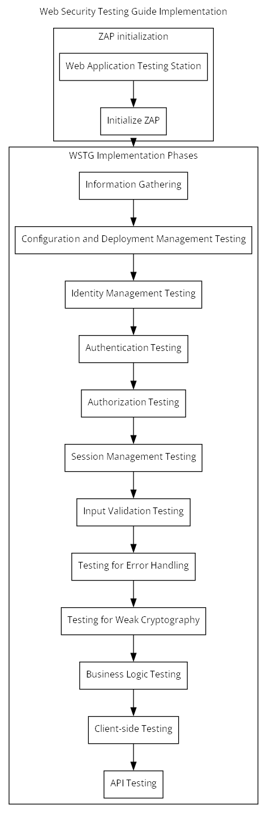

Web Security Testing Guide (WSTG) - Web Application Security Testing

How to prime a ZAP session (fits after 1. Information Gathering and really)
Initialize ZAP
Set target and initialise sitemap
- Make sure mode is set to 'Protected'
- Make sure that the 'Forced user' toolbar button is enabled
- Make sure you identify and exclude any logout pages ASAP: once found, right click and select "Exclude from -> Scanner"
- Start traditional spider from bottom tab (open a 'Spider' tab if necessary)
- Add target site to context
- Use Tools -> Authentication test to add a user to the context
- Select the user in the context as 'Forced user'
- Start AJAX spider (use chrome headless)
- Use 'Forced browsing' to add to the site map
Stages
- Information Gathering
- Configuration and Deployment Management Testing
- Identity Management Testing
- Authentication Testing
- Authorization Testing
- Session Management Testing
- Input Validation Testing
- Testing for Error Handling
- Testing for Weak Cryptography
- Business Logic Testing
- Client-side Testing
Detailed stages
-
Information Gathering
- Conduct Search Engine Discovery Reconnaissance for Information Leakage
- Fingerprint Web Server
- Review Webserver Metafiles for Information Leakage
- Enumerate Applications on Webserver
- Review Webpage Content for Information Leakage
- Identify Application Entry Points
- Map Execution Paths Through Application
- Fingerprint Web Application Framework
- Fingerprint Web Application
- Map Application Architecture
-
Configuration and Deployment Management Testing
- Test Network Infrastructure Configuration
- Test Application Platform Configuration
- Test File Extensions Handling for Sensitive Information
- Review Old Backup and Unreferenced Files for Sensitive Information
- Enumerate Infrastructure and Application Admin Interfaces
- Test HTTP Methods
- Test HTTP Strict Transport Security
- Test RIA Cross Domain Policy
- Test File Permission
- Test for Subdomain Takeover
- Test Cloud Storage
-
Identity Management Testing
- Test Role Definitions
- Test User Registration Process
- Test Account Provisioning Process
- Testing for Account Enumeration and Guessable User Account
- Testing for Weak or Unenforced Username Policy
-
Authentication Testing
- Testing for Credentials Transported over an Encrypted Channel
- Testing for Default Credentials
- Testing for Weak Lock Out Mechanism
- Testing for Bypassing Authentication Schema
- Testing for Vulnerable Remember Password
- Testing for Browser Cache Weaknesses
- Testing for Weak Password Policy
- Testing for Weak Security Question Answer
- Testing for Weak Password Change or Reset Functionalities
- Testing for Weaker Authentication in Alternative Channel
-
Authorization Testing
- Testing Directory Traversal File Include
- Testing for Bypassing Authorization Schema
- Testing for Privilege Escalation
- Testing for Insecure Direct Object References
-
Session Management Testing
- Testing for Session Management Schema
- Testing for Cookies Attributes
- Testing for Session Fixation
- Testing for Exposed Session Variables
- Testing for Cross Site Request Forgery
- Testing for Logout Functionality
- Testing Session Timeout
- Testing for Session Puzzling
- Testing for Session Hijacking
-
Input Validation Testing
- Testing for Reflected Cross Site Scripting
- Testing for Stored Cross Site Scripting
- Testing for HTTP Verb Tampering
- Testing for HTTP Parameter Pollution
-
Testing for SQL Injection
- Testing for Oracle
- Testing for MySQL
- Testing for SQL Server
- Testing PostgreSQL
- Testing for MS Access
- Testing for NoSQL Injection
- Testing for ORM Injection
- Testing for Client-side
- Testing for LDAP Injection
- Testing for XML Injection
- Testing for SSI Injection
- Testing for XPath Injection
- Testing for IMAP SMTP Injection
-
Testing for Code Injection
- Testing for Local File Inclusion
- Testing for Remote File Inclusion
- Testing for Command Injection
- Testing for Format String Injection
- Testing for Incubated Vulnerability
- Testing for HTTP Splitting Smuggling
- Testing for HTTP Incoming Requests
- Testing for Host Header Injection
- Testing for Server-side Template Injection
- Testing for Server-Side Request Forgery
-
Testing for Error Handling
- Testing for Improper Error Handling
- Testing for Stack Traces
-
Testing for Weak Cryptography
- Testing for Weak Transport Layer Security
- Testing for Padding Oracle
- Testing for Sensitive Information Sent via Unencrypted Channels
- Testing for Weak Encryption
-
Business Logic Testing
- Test Business Logic Data Validation
- Test Ability to Forge Requests
- Test Integrity Checks
- Test for Process Timing
- Test Number of Times a Function Can Be Used Limits
- Testing for the Circumvention of Work Flows
- Test Defenses Against Application Misuse
- Test Upload of Unexpected File Types
- Test Upload of Malicious Files
-
Client-side Testing
- Testing for DOM-Based Cross Site Scripting
- Testing for JavaScript Execution
- Testing for HTML Injection
- Testing for Client-side URL Redirect
- Testing for CSS Injection
- Testing for Client-side Resource Manipulation
- Testing Cross Origin Resource Sharing
- Testing for Cross Site Flashing
- Testing for Clickjacking
- Testing WebSockets
- Testing Web Messaging
- Testing Browser Storage
- Testing for Cross Site Script Inclusion
-
API Testing
- Testing GraphQL